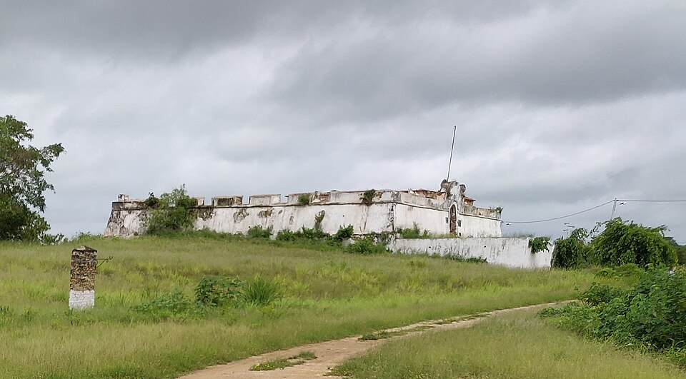

Tuende › Lugares › Cuanza Norte

Cultura e monumentos · Massangano, Cuanza Norte
Fortaleza de Massangano
Fortaleza de 1583 junto ao rio Cuanza.
Fortaleza de 1583 na margem do rio Cuanza, uma das mais antigas de Angola, ligada à ocupação portuguesa do interior e ao tráfico de escravos. Ainda se veem vestígios da antiga igreja. Em agosto de 2025 o Governo anunciou a sua reabilitação.
Informação prática
- Horário
- Por confirmar
- Morada
- Massangano, Cuanza Norte
- Preço
- Preço por confirmar
Verificado a 10 de outubro de 2026. Fontes: Ver Angola, Ver Angola (agosto de 2025), Wikipedia. Confirme sempre antes de ir.
Fortaleza de Massangano — Culture and landmarks, Massangano, Cuanza Norte
A 1583 fortress by the Cuanza River.
A 1583 fortress on the bank of the Cuanza River, one of Angola's oldest, linked to the Portuguese push inland and to the slave trade. Remains of the old church can still be seen. In August 2025 the government announced its restoration.
Prices in Kwanza, opening hours and directions are in the Tuende app (Portuguese and English).